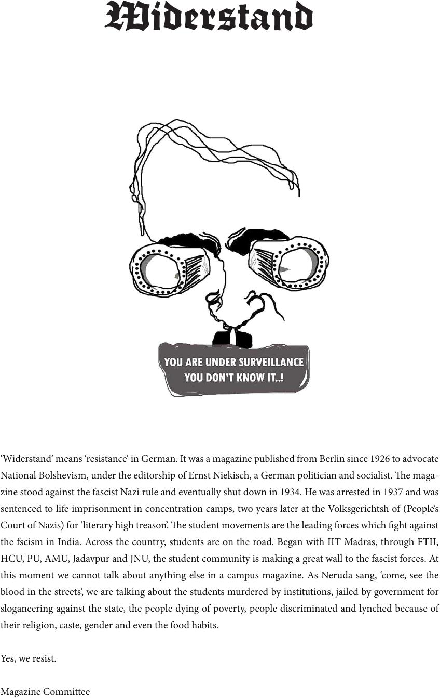

‘Widerstand’ means ‘resistance’ in German. It was a magazine published from Berlin since 1926 to advocate
National Bolshevism, under the editorship of Ernst Niekisch, a German politician and socialist. e maga-
zine stood against the fascist Nazi rule and eventually shut down in 1934. He was arrested in 1937 and was
sentenced to life imprisonment in concentration camps, two years later at the Volksgerichtsh of (People’s
Court of Nazis)for ‘literaryhigh treason’. e student movements are the leading forces which ght against
the fscism in India. Across the country, students are on the road. Began with IIT Madras, through FTII,
HCU, PU, AMU, Jadavpur and JNU, the student community is making a great wall to the fascist forces. At
this moment we cannot talk about anything else in a campus magazine. As Neruda sang, ‘come, see the
blood in the streets’, we are talking about the students murdered by institutions, jailed by government for
sloganeering against the state, the people dying of poverty, people discriminated and lynched because of
their religion, caste, gender and even the food habits.
Yes, we resist.
Magazine Committee
Widerstand